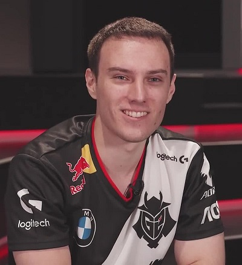
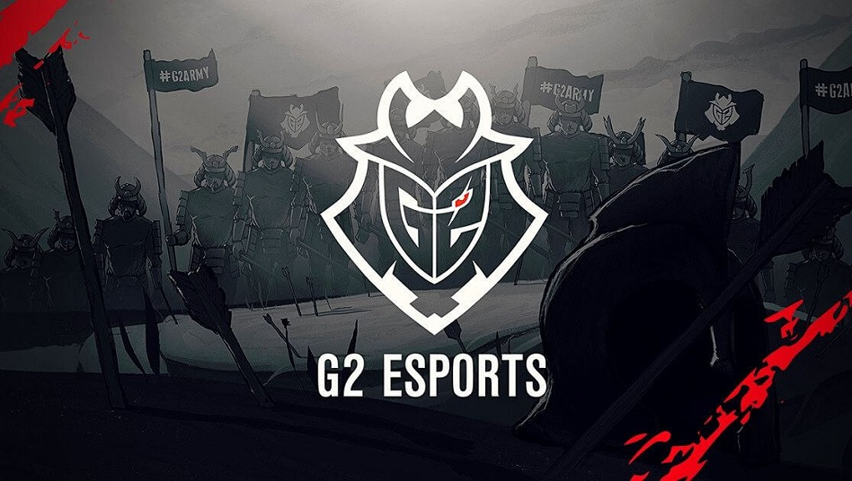

Moj omiljeni tim na samom početku bio je Fnatic, međutim 2015.godine osnovan je novi tim pod nazivom Gamers2 sada poznati kao  G2 Esports, među njegovim igračima našao se jedan hrvatski igrač Luka Perković poznati kao "Perkz", to mi je privuklo pozornost i ubrzo sam postao fan, od svog nastanka pokupili su većinu naslova i drže vrh ljestvice europskog prvenstva, 2019.godine osvajaju Mid-Season-Invitational te gube u finalu svjetskog prvenstva. To im je bila ujedno i najuspješnija godina do sada. Nažalost 2020.godine nakon još jednog neuspješnog pohoda na svjetsko zlato završavaju prvenstvo kao 4. plasirani i Luka Perković odlučuje napustiti tim i okusiti novu sreću u Američkoj ligi. U isto vrijeme moj omiljeni igrač iz Fnatica nakon 10 godina izlazi iz Fnatica i dolazi na Lukino mjesto. Veselim se novoj sezoni i svjetskom koje če se održati u 10. mjesecu 2021.godine i nadam se da je ova sezona ta u kojoj G2 Esports napokon osvaja svjetsko zlato.
